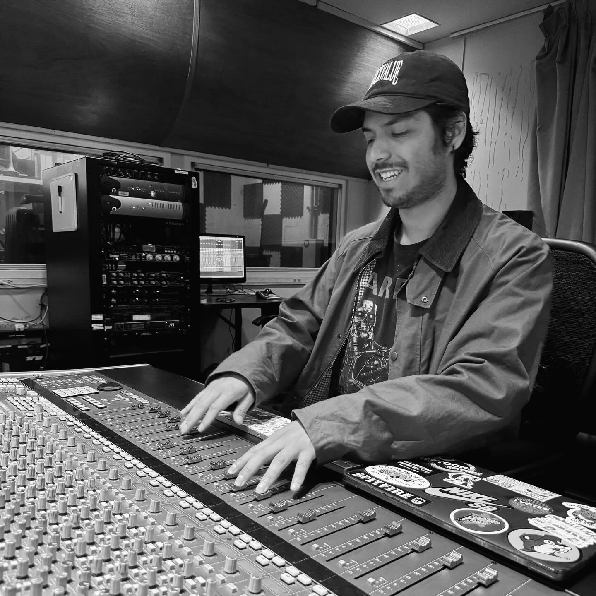

Boyle Heights | Los Angeles, CA
Mixing & Mastering Specialist
Multi-Genre Production Experience
Film & Media Sound Design
Kevin Mata is a talented and experienced audio engineer born and raised in Boyle Heights, Los Angeles. Growing up in a neighborhood (by mariachi plaza) where music was a powerful form of expression, Kevin found his passion early on. With years of experience producing music for local artists, his dedication to his craft led him to pursue formal education in audio engineering, where he honed his skills in mixing, mastering, and production. He presented a fresh and very unique perspective to the audio world from his eyes.
Mata specializes in transforming raw tracks into polished, professional sounds ready for the spotlight. A keen ear for detail and a commitment to quality, he ensures every element resonates perfectly with the client's vision.
Having worked with emerging artists and seasoned professionals alike, Kevin brings a personalized approach to every project. His expertise spans from professional mixing & mastering, live recording, vocal tuning, film & video sound design, and multi cross-genre production.